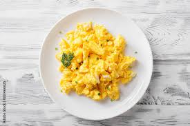

Scrambled Eggs

Description :
Scrambled eggs are one of the little luxuries of everyday life. When I make them, I savor every bite. They’re soft and creamy, rich and flavorful, and they just so happen to cook in under 5 minutes. Seriously, how amazing is that?
Ingredients :
- Eggs
- Milk
- Butter
- Salt
- Pepper
Steps :
- Beat the eggs. Place them in a medium bowl, and whisk until the yolk and whites are thoroughly combined.
- Add the milk, and whisk again! The beaten eggs should be an even yellow color, with no translucent spots or streaks.
- Next, gently preheat the pan. Brush a small nonstick skillet with olive oil, or melt a little butter inside it. Warm the skillet over medium heat.
- Finally, cook. Pour in the egg mixture, and let it cook for a few seconds, undisturbed. Then, pull a rubber spatula across the bottom of the pan to form large, soft curds of scrambled eggs.
Continue cooking over medium-low heat, folding and stirring the eggs every few seconds. As you work, make sure to scrape your spatula along the bottom and sides of the pan to continue to form curds and to prevent any part of the eggs from drying out.
Previous Recipe
Home
Next Recipe